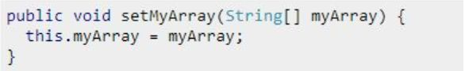
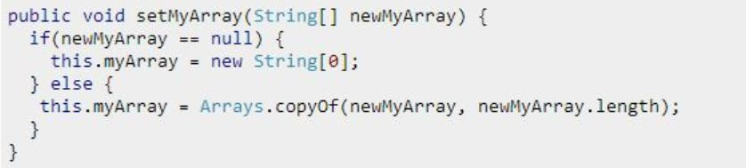

ArrayList总结
（1）ArrayList 是一种变长的集合类，基于定长数组实现，使用默认构造方法初始化出来的容量是10（1.7之后都是延迟初始化，即第一次调用add方法添加元素的时候才将elementData容量初始化为10）。
（2）ArrayList 允许空值和重复元素，当往 ArrayList 中添加的元素数量大于其底层数组容量时，其会通过扩容机制重新生成一个更大的数组。ArrayList扩容的长度是原长度的1.5倍
（3）由于 ArrayList 底层基于数组实现，所以其可以保证在 O(1) 复杂度下完成随机查找操作。
（4）ArrayList 是非线程安全类，并发环境下，多个线程同时操作 ArrayList，会引发不可预知的异常或错误。
（5）顺序添加很方便
（6）删除和插入需要复制数组，性能差（可以使用LinkindList）
（7）Integer.MAX_VALUE - 8 ：主要是考虑到不同的JVM,有的JVM会在加入一些数据头,当扩容后的容量大于MAX_ARRAY_SIZE,我们会去比较最小需要容量和MAX_ARRAY_SIZE做比较,如果比它大, 只能取Integer.MAX_VALUE,否则是Integer.MAX_VALUE -8。 这个是从jdk1.7开始才有的
https://www.cnblogs.com/lcj12121/p/11710065.html
常见面试题
ArrayList 实现于 List、RandomAccess 接口。可以插入空数据，也支持随机访问。
ArrayList相当于动态数据，其中最重要的两个属性分别是: elementData 数组，以及 size 大小。 在调用 add() 方法的时候：
public boolean add(E e) {
ensureCapacityInternal(size + 1); // 进行扩容校验
elementData[size++] = e;
return true;
}
添加元素主要做的功能就是进行扩容校验，将插入的值放到尾部，并将 size + 1。
如果是调用 add(index,e) 在指定位置添加的话：
public void add(int index, E element) {
rangeCheckForAdd(index);
ensureCapacityInternal(size + 1); // 扩容校验
//复制，向后移动
System.arraycopy(elementData, index, elementData, index + 1,
size - index);
elementData[index] = element;
size++;
}
同样的也需要扩容校验，接着对数据进行复制，目的是把 index 位置空出来放本次插入的数据，并将后面的数据向后移动一个位置。
最终的扩容代码如下
private void grow(int minCapacity) {
// overflow-conscious code
int oldCapacity = elementData.length;
int newCapacity = oldCapacity + (oldCapacity >> 1);
if (newCapacity - minCapacity < 0)
newCapacity = minCapacity;
if (newCapacity - MAX_ARRAY_SIZE > 0)
newCapacity = hugeCapacity(minCapacity);
// minCapacity is usually close to size, so this is a win:
elementData = Arrays.copyOf(elementData, newCapacity);
}
int newCapacity = oldCapacity + (oldCapacity >> 1); 扩容为原来的一点五倍，原来的大小+原来大小右移一位(除2，即为一半)
ArrayList 中 elementData 为什么使用 transient 修饰？
transient Object[] elementData;
由于 ArrayList 是基于动态数组实现的，所以并不是所有的空间都被使用。因此使用了 transient 修饰，可以防止被自动序列化。
因此 ArrayList 自定义了序列化与反序列化，具体可以看 writeObject 和 readObject 两个方法。 需要注意的一点是，当对象中自定义了 writeObject 和 readObject 方法时，JVM 会调用这两个自定义方法来实现序列化与反序列化。
ArrayList 的插入删除一定慢么？
取决于你删除的元素离数组末端有多远，ArrayList拿来作为堆栈来用还是挺合适的，push和pop操作完全不涉及数据移动操作。
ArrayList 的默认数组大小为什么是10？
据说是因为sun的程序员对一系列广泛使用的程序代码进行了调研，结果就是10这个长度的数组是最常用的最有效率的。也有说就是随便起的一个数字，8个12个都没什么区别，只是因为10这个数组比较的圆满而已。
ArrayList 做队列合适么？
队列一般是FIFO的，如果用ArrayList做队列，就需要在数组尾部追加数据，数组头部删除数组，反过来也可以。但是无论如何总会有一个操作会涉及到数组的数据搬迁，这个是比较耗费性能的。
这个回答是错误的！
ArrayList固然不适合做队列，但是数组是非常合适的。比如ArrayBlockingQueue内部实现就是一个环形队列，它是一个定长队列，内部是用一个定长数组来实现的。另外著名的Disruptor开源Library也是用环形数组来实现的超高性能队列，具体原理不做解释，比较复杂。简单点说就是使用两个偏移量来标记数组的读位置和写位置，如果超过长度就折回到数组开头，前提是它们是定长数组。
ArrayList 中的 elementData 为什么是 Object 而不是泛型 E ？
Java 中泛型运用的目的就是实现对象的重用，泛型T和Object类其实在编写时没有太大区别,只是JVM中没有T这个概念，T只是存在于编写时,进入虚拟机运行时,虚拟机会对泛型标志进行擦除，也就是替换T会限定类型替换（根据运行时类型）,如果没有限定就会用Object替换。同时Object可以new Object()，就是说可以实例化，而T则不能实例化。在反射方面来说，从运行时,返回一个T的实例时,不需要经过强制转换,然后Object则需要经过转换才能得到。
ArrayList list = new ArrayList(20); 中的list扩充几次？
默认ArrayList的长度是10个，所以如果你要往list里添加20个元素肯定要扩充一次（newCapacity 扩充为原来的1.5倍，但和输入的minCapacity相比发现小于minCapacity，于是 newCapacity = minCapacity，所以只扩容一次，具体见扩容里的grow方法），但是这里显示指明了需要多少空间，所以就一次性为你分配这么多空间，也就是不需要扩充了！
常见面试题2
当传递ArrayList到某个方法中，或者某个方法返回ArrayList，什么时候要考虑安全隐患？如何修复安全违规这个问题呢？
当array被当做参数传递到某个方法中，如果array在没有被复制的情况下直接被分配给了成员变量，那么就可能发生这种情况，即当原始的数组被调用的方法改变的时候，传递到这个方法中的数组也会改变。下面的这段代码展示的就是安全违规以及如何修复这个问题。
ArrayList被直接赋给成员变量——安全隐患：

修复这个安全隐患：

如何复制某个ArrayList到另一个ArrayList中去？写出你的代码？
下面就是把某个ArrayList复制到另一个ArrayList中去的几种技术：
使用clone()方法，比如ArrayList newArray = oldArray.clone();
使用ArrayList构造方法，比如：ArrayList myObject = new ArrayList(myTempObject);
使用Collection的copy方法。
在索引中ArrayList的增加或者删除某个对象的运行过程？效率很低吗？解释一下为什么？
在ArrayList中增加或者是删除元素，要调用System.arraycopy这种效率很低的操作，如果遇到了需要频繁插入或者是删除的时候，你可以选择其他的Java集合，比如LinkedList